Diagrama Entidad Relación - Simbología
En este apartado se mostrará en detalle la manera de desarrollar un Diagrama Entidad / Relación que es un dibujo que esquematiza el Modelo Entidad / Relación.
El diagrama Entidad / Relación es la forma de representar un Modelo Entidad / Relación.
No perdamos de vista que el un modelo es una representación gráfica de una situación del mundo real. A través del Diagrama Entidad / Relación elaboramos esa representación gráfica.
La representación que se muestra a continuación es una de las muchas representaciones que se utilizan en el medio. Todas las representaciones son igualmente válidas; lo único que las diferencian son su simbología.
En la Tabla No. 7 se enuncian los símbolos utilizados para dibujar cada uno de los elementos de un modelo Entidad / Relación.
|
Elemento |
Símbolo Utilizado |
|
Entidad |
Rectángulo |
|
Entidad Débil |
Doble Rectángulo |
|
Atributos Simples, Compuestos, Univalorados y Nulos |
Elipse Continua |
|
Atributos Derivados |
Elipse Punteada |
|
Atributos Multivalorados |
Doble Elipse |
|
Atributo Clave |
Elipse Continua con el Nombre del Atributo Subrayado. |
|
Relaciones |
Rombo en la mitad de las entidades involucradas, junto con líneas que unen dichas entidades con los rombos. |
|
Cardinalidad de las Relaciones |
Explicitamente se ponen 1 y/o M/N. |
|
Participación Total de una Entidad en una Relación |
Línea doble para unir la entidad con el rombo correspondiente a la relación |
|
Participación Parcial de una Entidad en una Relación |
Línea simple para unir la entidad con el rombo correspondiente a la relación. |
|
Especialización |
Un triángulo con la palabra ES dentro de si, que une la entidad padre con sus entidades hijas. |
Tabla No. 7 Símbolos Usados en un Diagrama Entidad / Relación
A continuación se esquematiza de una manera gráfica cada uno de los símbolos utilizados en el Diagrama Entidad / Relación.
Entidad Entidad Débil
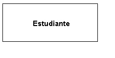 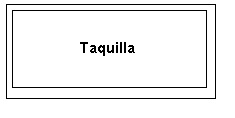
Atributos Simples, Compuestos, Univalorados, Nulos
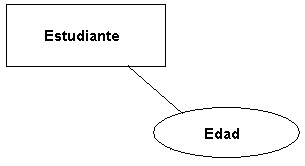
Atributos Derivados
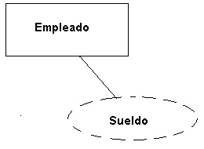
Atributos Multivalorados
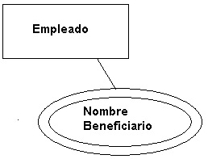
Atributo Clave
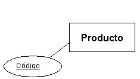
Relaciones
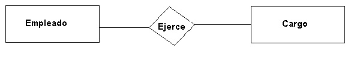
Relaciones Uno a Uno

En el ejemplo anterior, un paciente tiene una sola historia clínica y, a su vez, una historia clínica corresponde a un solo paciente.
Relación Uno a Varios
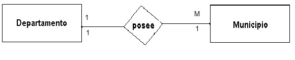
Un departamento posee varios municipios y un municipio está localizado en un solo departamento.
Relación Varios a Varios
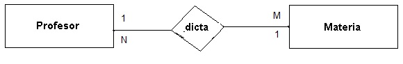
Participación Total de una Entidad en una Relación
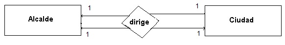
Todo alcalde está dirigiendo una ciudad y toda ciudad está siendo gobernada por un alcalde. En este caso, es una relación uno a uno porque se está analizando en un momento dado del tiempo. Tanto la entidad Alcalde como la entidad Ciudad participan en forma total en la relación Dirige y por lo tanto se dibuja doble línea como conector entre la entidad y la relación.
Participación Parcial de una Entidad en una Relación
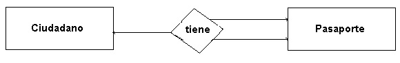
Existen ciudadanos que no poseen pasaporte. Por esa razón, la participación de la entidad Ciudadano en la relación Tiene es parcial y se esquematiza con una sola línea. En cambio, la participación de la entidad Pasaporte en la relación Tiene es total (Por qué?) y se dibuja con doble línea.
Especialización
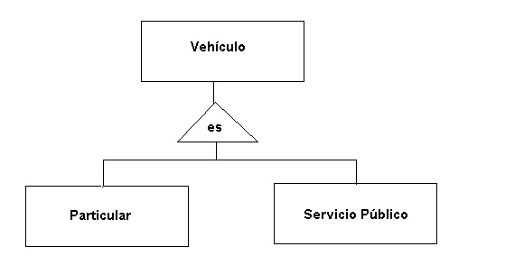
Antes de ilustrar el diagrama entidad / relación a través de unos cuantos ejemplos, es importante explicar que para empezar a desarrollar un diagrama de este tipo existen tres posibles puntos de partida:
- Tener a la mano, en forma de documento, los requerimientos detallados del usuario. Esto se puede lograr, bien sea, pidiéndole al usuario que redacte en una hoja sus requerimientos (situación que casi nunca se da) o redactando uno mismo como analista / diseñador una hoja de requerimientos de acuerdo a las entrevistas que se tuvieron con el usuario.
- Que el usuario le entregue al diseñador un ejemplo de un formato preimpreso que se desea sistematizar. Por ejemplo, una factura, una orden de compra, un listado con información importante.
- Que el diseñador sea contratado por una empresa para sistematizar un área del negocio y, a partir de ahí, hacer el levantamiento de requerimientos.